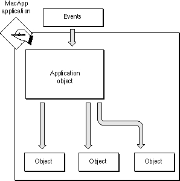
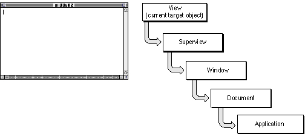

Legacy Document
Important: The information in this document is obsolete and should not be used for new development.
Important: The information in this document is obsolete and should not be used for new development.


Processing Events
Macintosh applications are driven by events. An application receives many kinds of events: activate and update events from the operating system, mouse and keystroke events generated by user actions, Apple events from a number of possible sources (the system, another application, a script, the application itself), and so on. In a MacApp application, the application object receives and dispatches these events. Figure 1-4 shows an application receiving and dispatching simple events.Figure 1-4 An application receiving events and dispatching them to objects

The application object has several mechanisms for determining which object should handle an event. The next sections describe how events are dispatched, and how objects handle the events they receive.
Direct Dispatching
The application object dispatches some events directly to a particular object. For example, update and activate events are dispatched directly to the window object for the window to be updated or activated.View Hierarchy Dispatching
Mouse-up and mouse-down events are dispatched to a view hierarchy. The event is passed first to the window in which it occurred. The window object iterates through its views, giving each view a chance to handle the mouse event. Each view object iterates through its subviews in the same way.Target Chain Dispatching
There are usually a number of objects in your application that can handle an event. MacApp organizes these objects into a linked chain, called a target chain. The object at the head of the chain is called the current target object.Figure 1-5 shows a typical target chain. The current target object is a view in the open window "untitled." The next object in the chain is the view's superview, followed by its window, its document, and the application object.
Figure 1-5 The objects in a typical target chain

MacApp handles menu choices and keystrokes by calling a method of the current target object. The target object either handles the event or sends it to the next object in the chain. For more information on direct dispatching, view hierarchy dispatching, and the target chain, see Chapter 5, "Events and Commands."
Apple Event Dispatching
Apple events are dispatched by the combined efforts of the application object, MacApp's global scripting dispatcher object, and the scripting support supplied by the Macintosh Operating System. Apple event dispatching is described in detail in Chapter 6, "Scripting."Handling Events
MacApp supplies a sophisticated mechanism for handling an event once it has been dispatched to an object. An object may handle an event by performing the specified action directly, but more often it creates a command object that is capable of doing and undoing the action.Handling an Event With a Command Object
A simple command object contains data and methods to perform an action. More sophisticated command objects support reversing the command action throughUndoandRedomethods.Your application posts command objects to the command queue, which is described in the next section. MacApp calls methods of the command object at the appropriate time to do, undo, or redo the command action.
- Note
- A command object is capable of sending an Apple event to record the command action or to allow an attached script to perform the action. For more information, see Chapter 6, "Scripting."

The Command Queue
Command objects posted by your application are inserted into a queue maintained by the application object. MacApp uses its main event loop to repeatedly retrieve either an event from the operating system or a command from the command queue. Toolbox events received by MacApp are normally dispatched directly upon receipt. Commands are retrieved from the command queue and processed in order.Event and Command Classes
TheTEventclass is an abstract base class that provides a common parent for classes that represent events and commands. MacApp provides many subclasses ofTEvent, including
- TToolboxEvent. MacApp uses the
TToolboxEventclass to encapsulate the information from a Macintosh Toolbox event, such as a mouse-down event. ThefEventfield stores the low-level information from the event's Toolbox event record.- TCommand.
TCommandis an abstract base class for classes that perform operations that can be done, undone, and redone. MacApp provides many subclasses ofTCommand. Two commonly used command classes areTTrackerandTUndoRedoCommand.
Event-Handling and Command-Handling Classes
TheTEventHandlerclass provides fields and methods for handling events such as mouse-down events and menu commands. TheTCommandHandlerclass, a subclass ofTEventHandler, adds support for creating command objects to perform operations that can be done, undone, and redone.Since most objects that handle events create commands to perform the operation specified by the event, you rarely define a direct subclass of
TEventHandler. It is more common to define a subclass ofTCommandHandler, or of one of the command-handler subclasses provided by MacApp.
MacApp's most widely used classes, including
- Note
- Since the
TCommandHandlerclass can both handle menu commands and create command objects, you can take your pick as to which capability its name refers to.TApplication,TDocument,TView, andTWindow, are based onTCommandHandlerand are therefore capable of handling both events and commands. Classes that descend fromTBehaviorcan also handle events. Behaviors are described in Chapter 5, "Events and Commands."